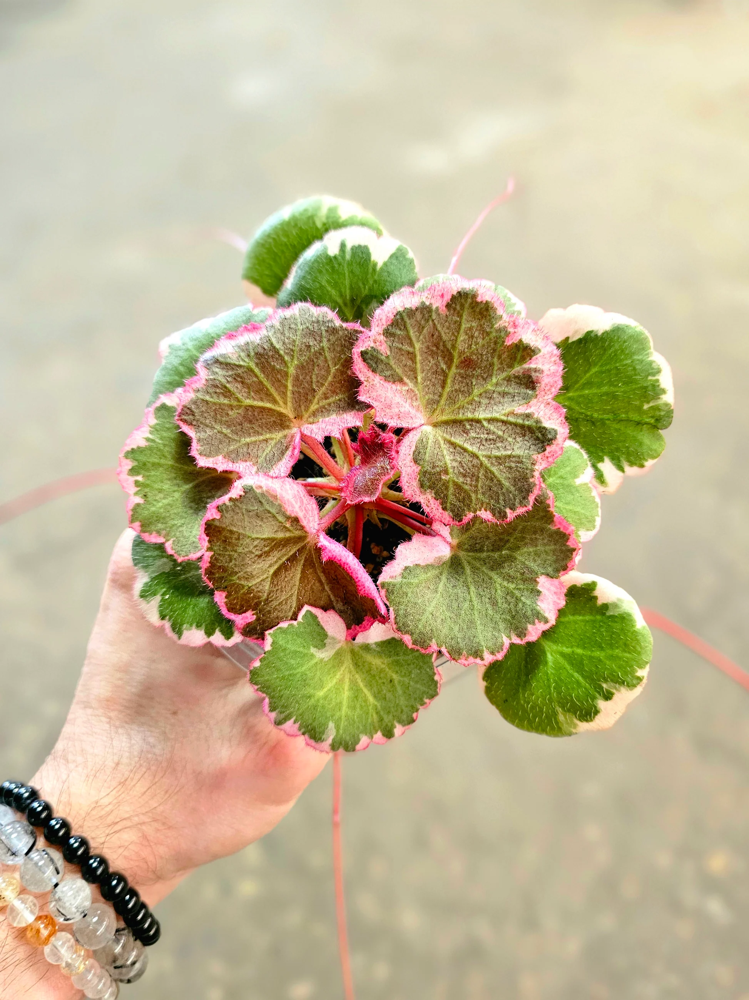
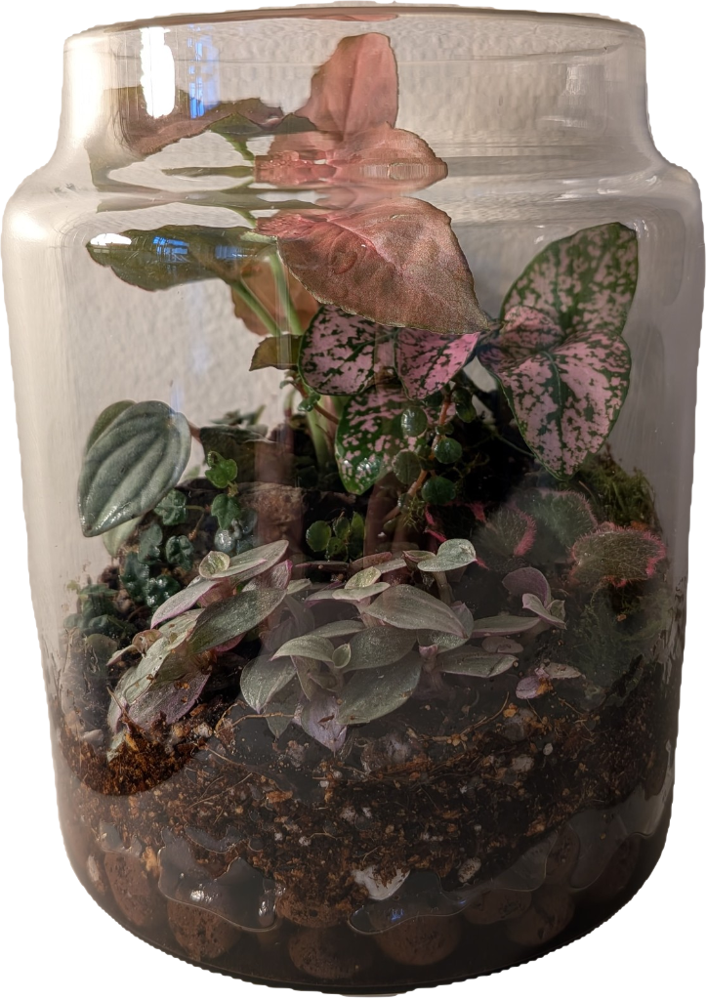
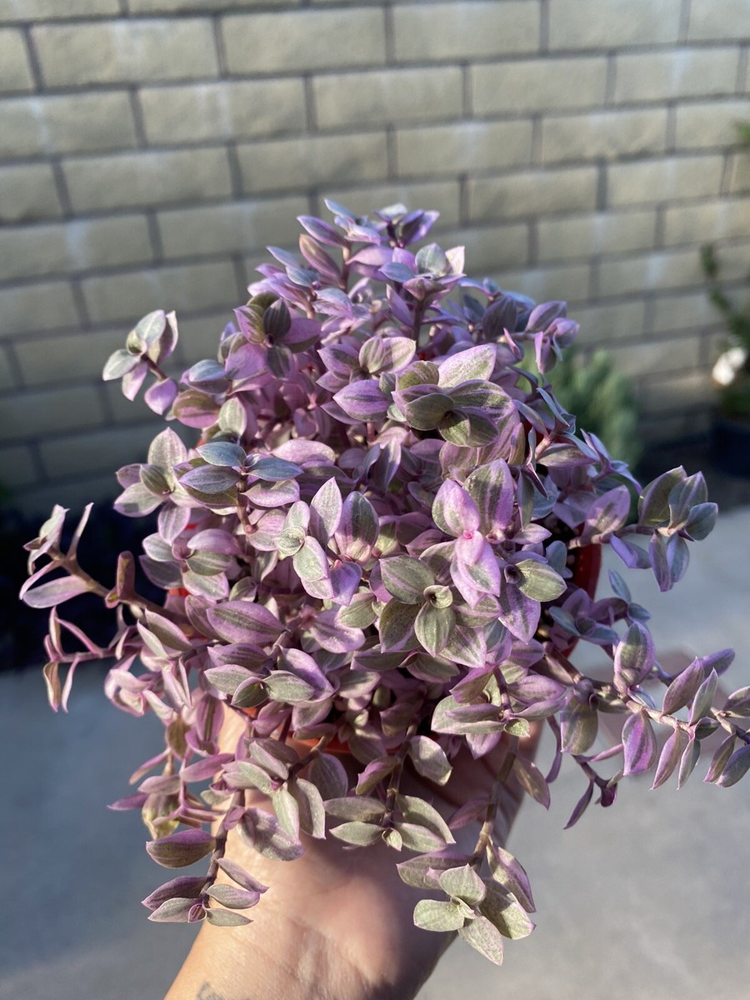
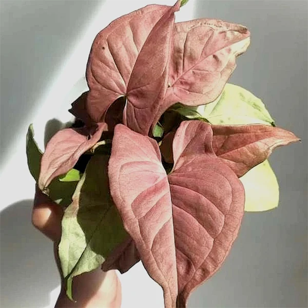
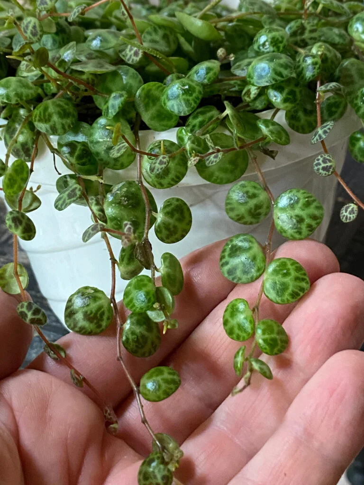
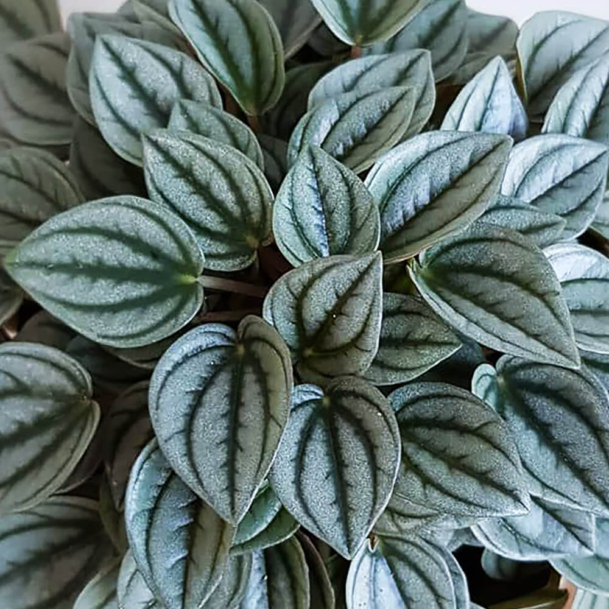
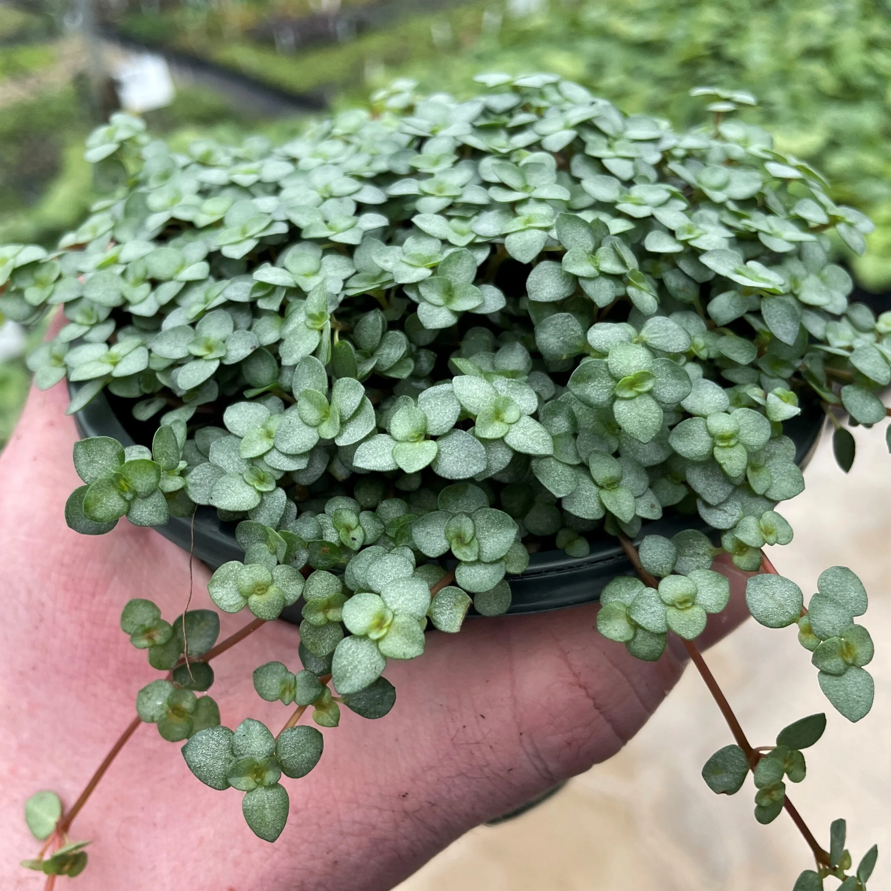
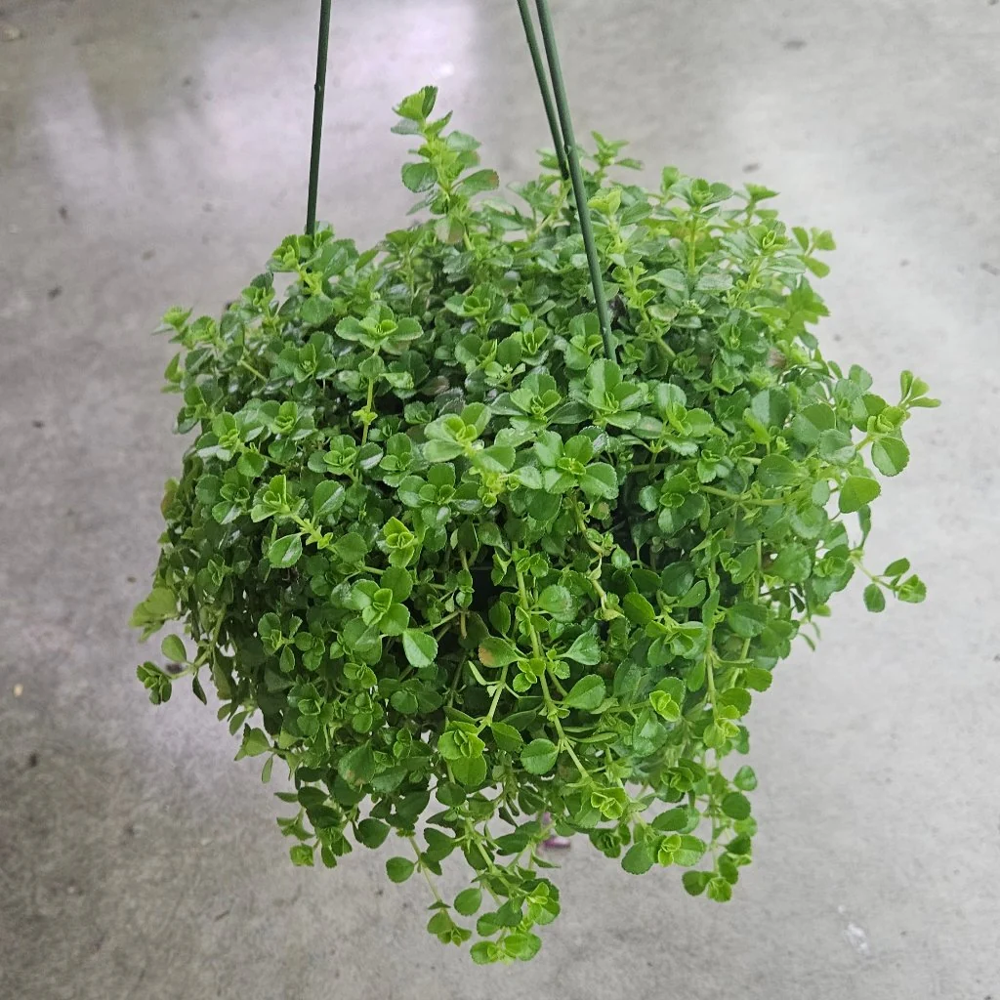
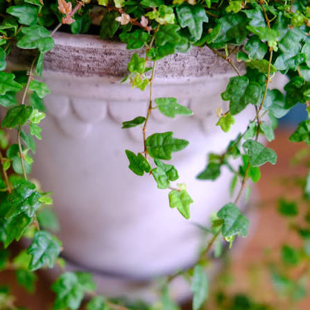

🍓 Strawberry Begonia Variegated
Saxifraga stolonifera
La embajadora rosada del terrario. Sus hojas plateadas y sus pequeños estolones parecen cintas de regalo entre el musgo.
Archivo botánico informal · cumpleaños número 29
Un pequeño rincón de bosque lluvioso asiático para celebrar los 29 años de una amiga que ama las plantas y los espacios acogedores.

| Tipo | Terrario abierto |
|---|---|
| Paleta | Fresa, matcha y dragon stone |
| Ánimo | Selva asiática acogedora |
| Luz | Brillante e indirecta |
| Agua | Según la humedad del sustrato |
El terrario Strawberry Matcha Latte (también conocido como Selva estefyana miniatura) es un hábitat decorativo inspirado en los bosques lluviosos de Asia, creado como regalo de cumpleaños para Estefy Lazo, que cumple 29 años en 2026. Sus hojas rosadas, verdes y plateadas parecen una taza de matcha con espuma de fresa, rodeada de enredaderas y mucha magia.
Aunque parece un postre en miniatura, este terrario no es comestible y está abierto, sin tapa. Es un paisaje vivo para observar la humedad, las texturas de las hojas y el drama silencioso de cada brote nuevo.

La embajadora rosada del terrario. Sus hojas plateadas y sus pequeños estolones parecen cintas de regalo entre el musgo.

Una enredadera delicada con hojas verdes y rosadas que cae como una guirnalda. Le encanta la luz suave y la humedad constante.

La planta flecha rosada: sus hojas en forma de corazón iluminan la escena como neón de selva después de la lluvia.

Sus hojitas redondas parecen caparazones diminutos avanzando despacio por el suelo del bosque.

Un puñado de confeti vegetal. Sus lunares rosados aportan el toque de fresa que hace sonreír a todo el terrario.

De hojas suaves y plateadas, parece guardar un poquito de cielo nocturno bajo el vidrio.

Sus hojas diminutas y azul verdosas forman una cascada de estrellas frescas entre las raíces y las piedras.

Un tapiz vivaz de hojitas redondas que cubre el suelo y hace que el paisaje se sienta como un cuento de hadas húmedo.

Sus pequeñas hojas con forma de ranita saltan visualmente de una rama a otra, como guardianas del bosque encantado.
Una dragon stone es la única pieza decorativa del terrario. Sus formas erosionadas parecen una pequeña montaña de otro mundo y le dan al arreglo ese aire de paisaje asiático en miniatura.
Esta página es una ficha educativa inspirada en los cuidados básicos de plantas de interior y la ecología de los terrarios. Para cuidar cada especie con precisión, consulta un vivero local, una guía botánica o a una persona experta con tierra bajo las uñas.